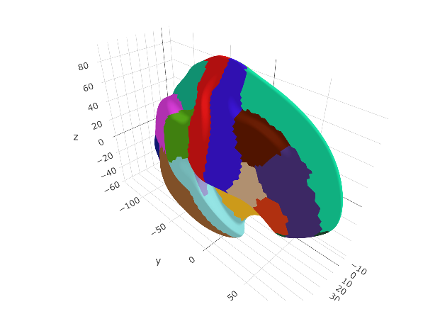
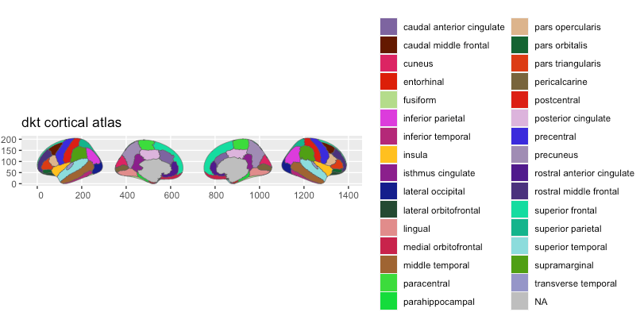
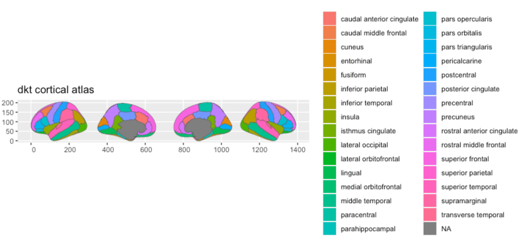

Here we provide an example of creating a cortical ggseg and ggseg3d atlas. To read more about the details of the process, see the vignette on creating custom3d atlases and creating custom polygon atlases. We will here show the fully automated way we have created the ggsegDKT atlas data.
To successfully run these operations, you must have the following installed on your system, and be running it on either a Linux or Mac.
- FSL
- FreeSurfer
- R
- Imagemagick
- orca
Initiate your R script with the following library calls:
The first step is to create a FreeSurfer annotation file for the “fsaverage5” subject. This subject is ideal as it has fewer vertices than fsaverage6 or fsaverage (and thereby plots faster), but still contains enough detail to produce a good representation of the cortical surface. Freesurfer comes with a DKT cortical annotation file, but only for the “bert” example subject. Since “bert” is not an average brain composite, it is not well suited for our purposes. We will first need to convert the annotation file for “bert” into an annotation file for “fsaverage5”. In Freesurfer this is done with the mri_surf2surf command, with very specific arguments. We have in ggsegExtra created a specialized function specifically for this type of transformation, calling FreeSurfer’s mri_surf2surf with the mri_surf2surf_rereg() function.
# convert DKT to fsaverage5
mri_surf2surf_rereg(subject = "bert",
annot = "aparc.DKTatlas",
hemi = "lh")
mri_surf2surf_rereg(subject = "bert",
annot = "aparc.DKTatlas",
hemi = "rh")Setting mapmethod to nnf
$Id: mri_surf2surf.c,v 1.103 2015/11/05 22:07:33 greve Exp $
setenv SUBJECTS_DIR /Applications/freesurfer/subjects
cd /Users/athanasm/R-stuff/LCBC/ggseg_stuff/atlases/ggsegDKT
/Applications/freesurfer/bin/mri_surf2surf --srcsubject bert --sval-annot aparc.DKTatlas --trgsubject fsaverage5 --tval data-raw//lh.aparc.DKTatlas --hemi lh
sysname Darwin
hostname Athanasias-MacBook-Pro.home
machine x86_64
user athanasm
srcsubject = bert
srcval = (null)
srctype =
trgsubject = fsaverage5
trgval = data-raw//lh.aparc.DKTatlas
trgtype =
srcsurfreg = sphere.reg
trgsurfreg = sphere.reg
srchemi = lh
trghemi = lh
frame = 0
fwhm-in = 0
fwhm-out = 0
label-src = (null)
label-trg = (null)
OKToRevFaceOrder = 1
UseDualHemi = 0
Reading source surface reg /Applications/freesurfer/subjects/bert/surf/lh.sphere.reg
Loading source data
Reading surface file /Applications/freesurfer/subjects/bert/surf/lh.orig
reading colortable from annotation file...
colortable with 36 entries read (originally /autofs/space/tanha_002/users/greve/fsdev.build/average/colortable_desikan_killiany.txt)
Reading target surface reg /Applications/freesurfer/subjects/fsaverage5/surf/lh.sphere.reg
Done
Using surf2surf_nnfr()
Mapping Source Volume onto Source Subject Surface
surf2surf_nnfr: building source hash (res=16).
Surf2Surf: Forward Loop (10242)
Surf2Surf: Dividing by number of hits (10242)
INFO: nSrcLost = 122841
nTrg121 = 10242, nTrgMulti = 0, MnTrgMultiHits = 0
nSrc121 = 10242, nSrcLost = 122841, nSrcMulti = 122841, MnSrcMultiHits = 0
Saving target data
Converting to target annot
Saving to target annot data-raw//lh.aparc.DKTatlasThe function defaults to converting the annotation file of a given subject to “fsaverage5”, but this can be altered adding the target_subject argument. The string given to the annot argument must match an annotation file name in the subject’s label/ folder as specified in $FREESURFER_SUBJ_DIR or specified location though the subjects_dir argument to the function. Further, by default the converted annotation file will be stored in the target subject’s label/ folder. If you for some reason do not have write access to this folder, this can be overridden through the output_dir argument.
Once an annotation file is made, you can proceed to creating the 3d-mesg atlas. The function make_aparc_2_3datlas() runs a series of text-conversions to create the atlas, ending with several ascii-files and surface files with the extension .ply.
# Make 3d ----
dkt_3d <- make_aparc_2_3datlas(annot = "aparc.DKTatlas",
output_dir = "~/Desktop/")Saving /Users/athanasm/Desktop/fsaverage5/srf/ascii/rh.LCBC.asc as a surface
Saving /Users/athanasm/Desktop/fsaverage5/srf/ascii/lh.inflated.asc as a surface
Saving /Users/athanasm/Desktop/fsaverage5/srf/ascii/lh.white.asc as a surface
Saving /Users/athanasm/Desktop/fsaverage5/srf/ascii/rh.inflated.asc as a surface
Saving /Users/athanasm/Desktop/fsaverage5/srf/ascii/rh.white.asc as a surface
Saving /Users/athanasm/Desktop/fsaverage5/srf/ascii/lh.LCBC.asc as a surface
dkt_3d# A tibble: 6 x 4
atlas surf hemi ggseg_3d
<chr> <chr> <chr> <list<tbl_df[,6]>>
1 aparc.DKTatlas_3d inflated left [32 × 6]
2 aparc.DKTatlas_3d inflated right [32 × 6]
3 aparc.DKTatlas_3d LCBC left [32 × 6]
4 aparc.DKTatlas_3d LCBC right [32 × 6]
5 aparc.DKTatlas_3d white left [32 × 6]
6 aparc.DKTatlas_3d white right [32 × 6]
ggseg3d(atlas = dkt_3d)
The atlas data usually needs some manual editing to get it into a nice shape for other users, and for nice plotting. We are avid tidyverse users, and as such the procedures we use here to clean the data use tidyverse functions.
First, we will unnest the ggseg_3d column, so we can see what the atlas data contains.
unnest(dkt_3d, ggseg_3d)# A tibble: 192 x 9
atlas surf hemi region colour label roi annot mesh
<chr> <chr> <chr> <chr> <chr> <chr> <chr> <chr> <list>
1 aparc.DKT… inflat… left caudalanteri… #7D64A0 lh_caudalant… 0001 caudalanter… <named l…
2 aparc.DKT… inflat… left caudalmiddle… #641900 lh_caudalmid… 0002 caudalmiddl… <named l…
3 aparc.DKT… inflat… left cuneus #DC1464 lh_cuneus 0003 cuneus <named l…
4 aparc.DKT… inflat… left entorhinal #DC140A lh_entorhinal 0004 entorhinal <named l…
5 aparc.DKT… inflat… left fusiform #B4DC8C lh_fusiform 0005 fusiform <named l…
6 aparc.DKT… inflat… left inferiorpari… #DC3CDC lh_inferiorp… 0006 inferiorpar… <named l…
7 aparc.DKT… inflat… left inferiortemp… #B42878 lh_inferiort… 0007 inferiortem… <named l…
8 aparc.DKT… inflat… left isthmuscingu… #8C148C lh_isthmusci… 0008 isthmuscing… <named l…
9 aparc.DKT… inflat… left lateraloccip… #141E8C lh_lateraloc… 0009 lateralocci… <named l…
10 aparc.DKT… inflat… left lateralorbit… #234B32 lh_lateralor… 0010 lateralorbi… <named l…
# … with 182 more rowsUsually, it is the region column we want to do some cleaning of, to make the names of the regions more human readable. This column is populated by the names to each region as specified in the annotation file.
We can inspect all the unique values in this column, so we can start setting up some logic for renaming the regions.
region1 region2 region3
"caudalanteriorcingulate" "caudalmiddlefrontal" "cuneus"
region4 region5 region6
"entorhinal" "fusiform" "inferiorparietal"
region7 region8 region9
"inferiortemporal" "isthmuscingulate" "lateraloccipital"
region10 region11 region12
"lateralorbitofrontal" "lingual" "medialorbitofrontal"
region13 region14 region15
"middletemporal" "parahippocampal" "paracentral"
region16 region17 region18
"parsopercularis" "parsorbitalis" "parstriangularis"
region19 region20 region21
"pericalcarine" "postcentral" "posteriorcingulate"
region22 region23 region24
"precentral" "precuneus" "rostralanteriorcingulate"
region25 region26 region27
"rostralmiddlefrontal" "superiorfrontal" "superiorparietal"
region28 region29 region30
"superiortemporal" "supramarginal" "transversetemporal"
region31 region32
"insula" NA The region names for this atlas mainly need some white space in-between certain words to make the names readable. For instance, all regions with temporal could benefit from a white-space before that word. We’ll try to see other such patterns and how we can easily alter names so they look nicer.
unnest(dkt_3d, ggseg_3d) %>%
mutate(region = gsub("temporal", " temporal", region),
region = gsub("caudal", "caudal ", region),
region = gsub("rostral", "rostral ", region),
region = gsub("middle", "middle ", region),
region = gsub("lateral", "lateral ", region),
region = gsub("medial", "medial ", region),
region = gsub("rior", "rior ", region),
region = gsub("cingulate", " cingulate", region),
# we've introduced some double whitespace, we dont want that
region = gsub(" ", " ", region)
) %>%
select(region) %>%
unique() %>%
unlist() region1 region2 region3
"caudal anterior cingulate" "caudal middle frontal" "cuneus"
region4 region5 region6
"entorhinal" "fusiform" "inferior parietal"
region7 region8 region9
"inferior temporal" "isthmus cingulate" "lateral occipital"
region10 region11 region12
"lateral orbitofrontal" "lingual" "medial orbitofrontal"
region13 region14 region15
"middle temporal" "parahippocampal" "paracentral"
region16 region17 region18
"parsopercularis" "parsorbitalis" "parstriangularis"
region19 region20 region21
"pericalcarine" "postcentral" "posterior cingulate"
region22 region23 region24
"precentral" "precuneus" "rostral anterior cingulate"
region25 region26 region27
"rostral middle frontal" "superior frontal" "superior parietal"
region28 region29 region30
"superior temporal" "supramarginal" "transverse temporal"
region31 region32
"insula" NA Onve we are satisfied with the region names, we should also alter the atlas name in the data, to something a little more pleasing.
unnest(dkt_3d, ggseg_3d) %>%
mutate(region = gsub("temporal", " temporal", region),
region = gsub("caudal", "caudal ", region),
region = gsub("rostral", "rostral ", region),
region = gsub("middle", "middle ", region),
region = gsub("lateral", "lateral ", region),
region = gsub("medial", "medial ", region),
region = gsub("rior", "rior ", region),
region = gsub("cingulate", " cingulate", region),
# we've introduced some double whitespace, we dont want that
region = gsub(" ", " ", region),
atlas = "dkt_3d"
) # A tibble: 192 x 9
atlas surf hemi region colour label roi annot mesh
<chr> <chr> <chr> <chr> <chr> <chr> <chr> <chr> <list>
1 dkt_3d inflat… left caudal anterio… #7D64… lh_caudalante… 0001 caudalanteri… <named li…
2 dkt_3d inflat… left caudal middle … #6419… lh_caudalmidd… 0002 caudalmiddle… <named li…
3 dkt_3d inflat… left cuneus #DC14… lh_cuneus 0003 cuneus <named li…
4 dkt_3d inflat… left entorhinal #DC14… lh_entorhinal 0004 entorhinal <named li…
5 dkt_3d inflat… left fusiform #B4DC… lh_fusiform 0005 fusiform <named li…
6 dkt_3d inflat… left inferior parie… #DC3C… lh_inferiorpa… 0006 inferiorpari… <named li…
7 dkt_3d inflat… left inferior tempo… #B428… lh_inferiorte… 0007 inferiortemp… <named li…
8 dkt_3d inflat… left isthmus cingul… #8C14… lh_isthmuscin… 0008 isthmuscingu… <named li…
9 dkt_3d inflat… left lateral occipi… #141E… lh_lateralocc… 0009 lateraloccip… <named li…
10 dkt_3d inflat… left lateral orbito… #234B… lh_lateralorb… 0010 lateralorbit… <named li…
# … with 182 more rowsOf note, at this stage, you can also add other columns of importance to the atlas. As long as these to not conflict in terms of names with the default atlas columns, you can add as many extra columns as you wish. For instance, if this is an atlas based on connectivity, there might be a nested structure to the regions, such that certain regions together form a specific network. Adding a network column specifying which regions belong to which network is then appropriate.
We are now happy with the atlas data we’ve cleaned, so we can go ahead and make it into a ggseg3d-atlas class again by nesting the atlas data by surface and hemisphere
dkt_3d <- unnest(dkt_3d, ggseg_3d) %>%
mutate(region = gsub("temporal", " temporal", region),
region = gsub("caudal", "caudal ", region),
region = gsub("rostral", "rostral ", region),
region = gsub("middle", "middle ", region),
region = gsub("lateral", "lateral ", region),
region = gsub("medial", "medial ", region),
region = gsub("rior", "rior ", region),
region = gsub("cingulate", " cingulate", region),
# we've introduced some double whitespace, we dont want that
region = gsub(" ", " ", region),
atlas = "dkt_3d"
) %>%
nest_by(atlas, surf, hemi, .key = "ggseg_3d") %>%
as_ggseg3d_atlas()
dkt_3d# A tibble: 6 x 4
atlas surf hemi ggseg_3d
<chr> <chr> <chr> <list>
1 dkt_3d inflated left <tibble [32 × 6]>
2 dkt_3d inflated right <tibble [32 × 6]>
3 dkt_3d LCBC left <tibble [32 × 6]>
4 dkt_3d LCBC right <tibble [32 × 6]>
5 dkt_3d white left <tibble [32 × 6]>
6 dkt_3d white right <tibble [32 × 6]>When this is done, we recommend plotting all variations and make sure that the expected result is returned.
ggseg3d(atlas = dkt_3d, hemisphere = "left", surface = "inflated")
ggseg3d(atlas = dkt_3d, hemisphere = "right", surface = "inflated")
ggseg3d(atlas = dkt_3d, hemisphere = "left", surface = "LCBC")
ggseg3d(atlas = dkt_3d, hemisphere = "right", surface = "LCBC")
ggseg3d(atlas = dkt_3d, hemisphere = "left", surface = "white")
ggseg3d(atlas = dkt_3d, hemisphere = "right", surface = "white")Once a 3d atlas is made, creating a 2d atlas is fairly straight forward. Using ImageMagick, the make_ggseg3d_2_ggseg() function takes snapshots of each region, for each hemisphere and lateral/medial view, extracts the contours of these regions, smooth’es them, reduces the vertices and organizes the data into a brain-atlas class object. The function creates a lot of intermediary files (mostly snapshots), and will likely require you to re-run several steps to produce the wanted end result. While the function at default stores these files in a temporary folder, we highly recommend setting the output_dir option, so that you do not need to rerun all steps when testing another configuration of settings. For instance, the step taking the longest time and most processing time is snapshotting the regions and extracting the contours. But these two steps only need to be run once, as long as the ggseg3d-atlas has not changed somehow.
# make atlas ----
dkt <- make_ggseg3d_2_ggseg(dkt_3d,
steps = 1:7,
smoothness = 2,
tolerance = .5,
output_dir = "~/Desktop/")● 1/7 Snapshotting views of entire atlas to ~/Desktop//dkt
✓ Snapshots complete
● 2/7 Snapshotting individual regions to ~/Desktop//dkt/img
✓ Region snapshots complete
● 3/7 Isolating regions to ~/Desktop//dkt/masks
● & writing masks to ~/Desktop//dkt/regions
✓ isolation complete
● 4/7 Extracting contours from regions
|===================================================================| 100%, Elapsed 00:25
✓ contours complete
● 5/7 Smoothing contours
✓ Smoothing complete
● 6/7 Reducing vertexes
✓ Vertexes reduced
● 7/7 Making data frame
✓ Atlas complete with 3694 verticesThe most likely steps to redo are steps 5-7, tweaking the smoothness and tolerance arguments to improve how the polygons look and how many vertices there are. The fewer vertices, the faster the plot renders, but too few and the polygons will look poor.
First step is to have a look at the actual object. If the brain-atlas is correctly set up, the output should look like the below.
dkt# dkt cortical brain atlas
regions: 31
hemispheres: left, right
side views: lateral, medial
palette: yes
use: ggplot() + geom_brain()
----
hemi side region label roi
<chr> <chr> <chr> <chr> <chr>
1 left lateral caudal middle frontal lh_caudalmiddlefrontal 0002
2 left lateral fusiform lh_fusiform 0005
3 left lateral inferior parietal lh_inferiorparietal 0006
4 left lateral inferior temporal lh_inferiortemporal 0007
5 left lateral lateral occipital lh_lateraloccipital 0009
6 left lateral lateral orbitofrontal lh_lateralorbitofrontal 0010
7 left lateral middle temporal lh_middletemporal 0013
8 left lateral pars opercularis lh_parsopercularis 0016
9 left lateral pars orbitalis lh_parsorbitalis 0017
10 left lateral pars triangularis lh_parstriangularis 0018
# … with 71 more rowsSecond step is to make sure the data is being plotted correctly.
plot(dkt)
In most cases, given the values in the 3d-atlas’ colour column is correctly applied, but problems may arise given how annotation files are set up.
Many annotation files have a unique colour for the same regions but in different hemispheres. This can often mess up the palette for the 2d-atlas, which needs the regions in the different hemispheres to have the same palette colour.
If you are working with an atlas that does not have a colour-scheme dispatched with the atlas, the palette should be set to NULL.
dkt$palette <- NULL
dkt# dkt cortical brain atlas
regions: 31
hemispheres: left, right
side views: lateral, medial
palette: no
use: ggplot() + geom_brain()
----
hemi side region label roi
<chr> <chr> <chr> <chr> <chr>
1 left lateral caudal middle frontal lh_caudalmiddlefrontal 0002
2 left lateral fusiform lh_fusiform 0005
3 left lateral inferior parietal lh_inferiorparietal 0006
4 left lateral inferior temporal lh_inferiortemporal 0007
5 left lateral lateral occipital lh_lateraloccipital 0009
6 left lateral lateral orbitofrontal lh_lateralorbitofrontal 0010
7 left lateral middle temporal lh_middletemporal 0013
8 left lateral pars opercularis lh_parsopercularis 0016
9 left lateral pars orbitalis lh_parsorbitalis 0017
10 left lateral pars triangularis lh_parstriangularis 0018
# … with 71 more rowsWhen there is no palette, the default atlas plot will return with default ggplot2 colours. This is absolutely a valid option. The palette is an optional part of the atlas.
plot(dkt)
If you want to correctly apply a palette, the dkt$palette part of the atlas is a named character vector, where the value of the vector is the hex-colour code, and the names of the elements are the region names as seen in the region column of the atlas data.
All together, the script to create both 3d and 2d atlases of the DKT parcellation looks like this:
library(ggsegExtra)
library(ggseg)
library(tidyverse)
# convert DKT to fsaverage5
mri_surf2surf_rereg(subject = "bert",
annot = "aparc.DKTatlas",
hemi = "lh",
output_dir = "data-raw/")
mri_surf2surf_rereg(subject = "bert",
annot = "aparc.DKTatlas",
hemi = "rh",
output_dir = "data-raw/")
# Make 3d ----
dkt_3d <- make_aparc_2_3datlas(annot = "aparc.DKTatlas",
annot_dir = "data-raw/",
output_dir = "~/Desktop") %>%
mutate(region = gsub("temporal", " temporal", region),
region = gsub("caudal", "caudal ", region),
region = gsub("rostral", "rostral ", region),
region = gsub("middle", "middle ", region),
region = gsub("lateral", "lateral ", region),
region = gsub("medial", "medial ", region),
region = gsub("rior", "rior ", region),
region = gsub("cingulate", " cingulate", region),
# we've introduced some double whitespace, we dont want that
region = gsub(" ", " ", region),
atlas = "dkt_3d"
) %>%
nest_by(atlas, surf, hemi, .key = "ggseg_3d") %>%
as_ggseg3d_atlas()
# make 2d ----
dkt <- make_ggseg3d_2_ggseg(dkt_3d,
steps = 1:7,
smoothness = 2,
tolerance = .5,
output_dir = "~/Desktop/")
plot(dkt)